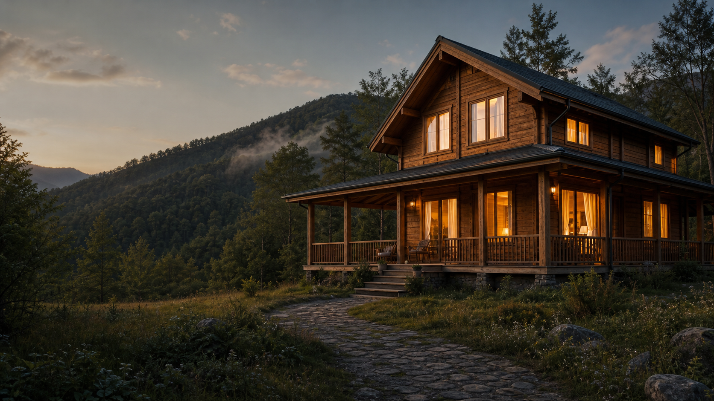
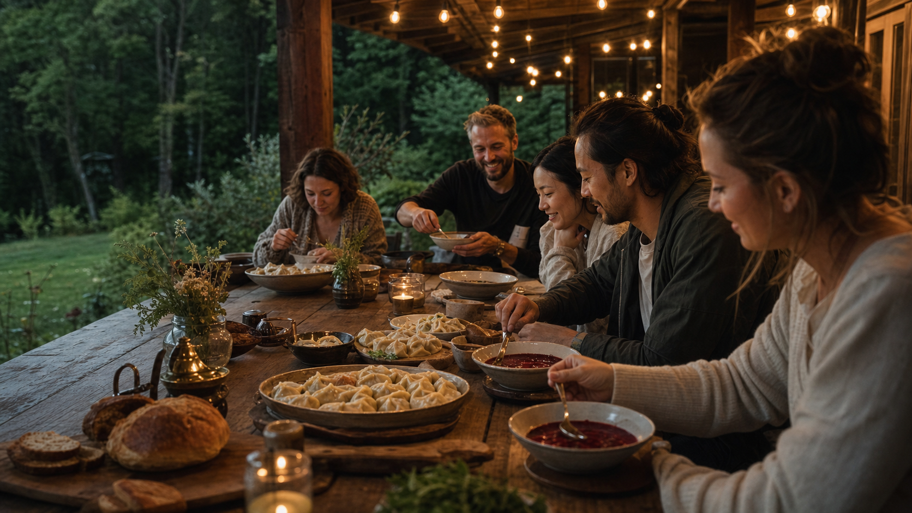

Лукьяновка и Пидан
Место для тех, кому нужен воздух, маршрут и пауза.
Маори стоит рядом с известными природными маршрутами Приморья.
43.1636°132.7027°
Ретриты и группы
Дом можно собрать под общий замысел.
Пять комнат, зал 60 м², кухня, баня и общее застолье подходят для камерных групп до десяти человек.

Рядом
Природа, которую лучше открывать с человеком, знающим место.
Сложность, сезонность и доступность маршрутов меняются.
Поездка без суеты
Катерина помогает организовать
Не каталог развлечений, а личный подбор под сезон, погоду и силы гостей.
Собрать программу